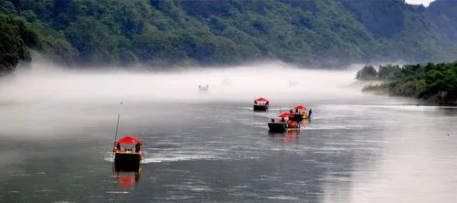
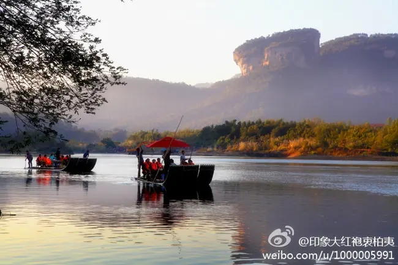
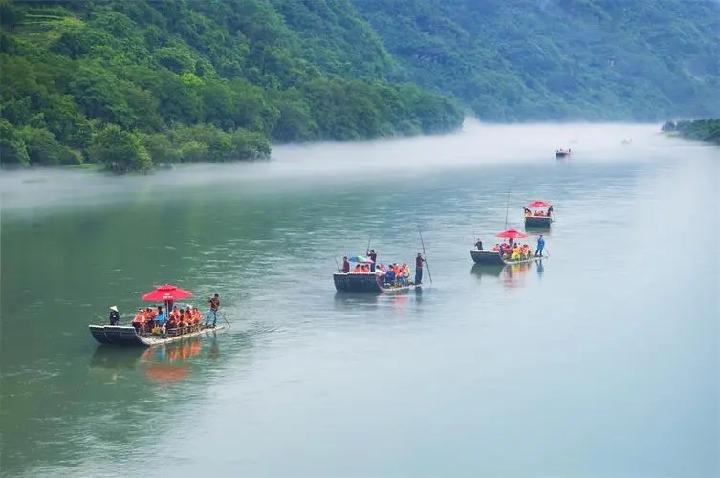

云河漂流
国家4A级旅游景区
开放时间：06:00-15:00
景点介绍
在“云里的阳光，有茶的日子”里，乘竹筏、品香茗、赏风景，继九曲溪竹筏漂流之后，武夷山又一休闲漂流方式——云河漂流。集休闲、娱乐、文化、观光、生态为一体，丰富武夷山自然景观、人文景观的水上竹筏漂流项目。

云河漂流是武夷山新打造的重点旅游新产品，是一个集休闲、观光、娱乐、文化为一体，丰富武夷山自然景观、人文景观的水上竹筏漂流产品。以“慢游云河、品茗山水”为主基调，该产品充分适应武夷山打造休闲慢生活的旅游主题，游览方式为3拼排，提供品茶服务，乘坐安稳舒适、视野开阔、可观山景、能赏水色、品茶赏艺，是现代旅游中较为高端的休闲旅游产品。

云河漂流线路从景区北入口武夷大桥西侧至景区南入口公馆大桥口，全程7.5公里，采用三拼排组成的竹筏进行漂流，在竹筏上安排有茶桌，配有专人全程讲解和组织游客互动，视野开阔，可观山景，能赏水色，沿途可观赏到景区的大王峰、三姑岩、狮子峰、幔亭峰、双燕峰、和合岩、金蟾岩、佛国岩、神通岩等九大奇峰美景。
“慢游云河，品茗山水”是云河漂流的主基调，由于水流缓，这里成了沏茶品茗的绝佳之选。云河漂流的乐趣便是筏上品茗，行在云里的日子，沉浸在茶的时光里，属于武夷山的休闲时光……

地理位置：武夷山景区北入口，距度假区10分钟车程
交通方式：6、7、9路车或的士均可到达
咨询电话：0599-8030999